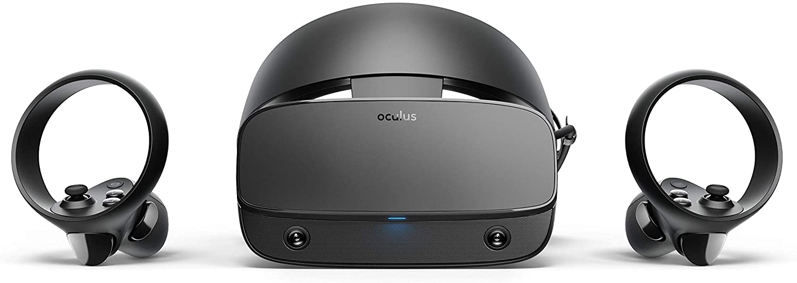
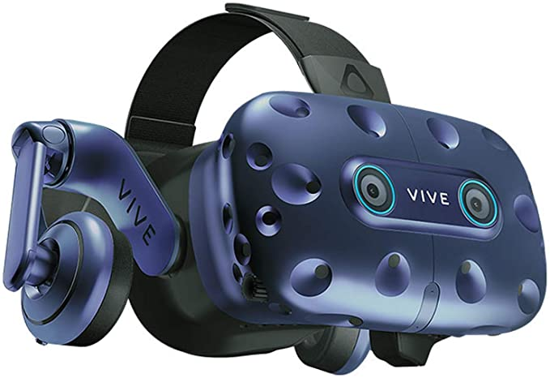
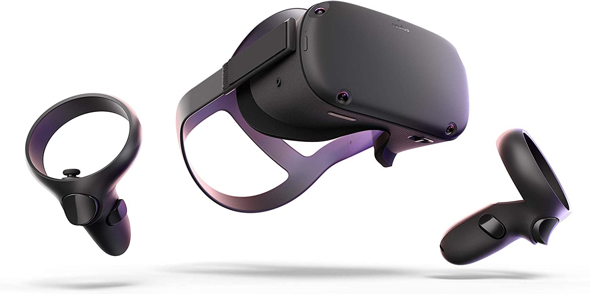

Voici une sélection de nos produits coup de coeur, vous y trouverez des produirts de qualité ainsi qu'un lien pour les acheter sur Amazon en cliquant sur la photo du produit.
Conçu avec Lenovo, Oculus Rift S vous place au centre des jeux de réalité virtuelle pour PC les plus enivrants. Voyez l’action se dérouler autour de vous grâce à la nouvelle génération d’optiques. Plongez dans l’expérience grâce à une conception confortable qui vous permet de jouer plus vite et plus longtemps. Le suivi Oculus Insight vous donne le pouvoir de vous déplacer dans toutes les directions de votre espace de jeu. Aucun capteur externe. Une configuration aisée. À peine déballées, nos manettes Oculus Touch vous mettent dans l’action. Plongez dans le jeu et le futur de la VR pour PC.


Ce casque possède un tracking oculaire de précision combiné à un son et des graphismes de qualité professionnelle. Il est conçu pour les studios, les bureaux et les utilisateurs de vr à la recherche d’une expérience de haut niveau.
Le premier casque VR tout-en-un: Aucun câble. Aucun PC. Oculus Quest est le tout premier système de jeu tout-en-un conçu spécialement pour la réalité virtuelle. Configurez le casque avec l'application Oculus et profitez de la VR presque partout. Oculus Quest s'adapte à votre environnement et vous permet de jouer debout ou assis, dans des endroits confinés ou spacieux.
